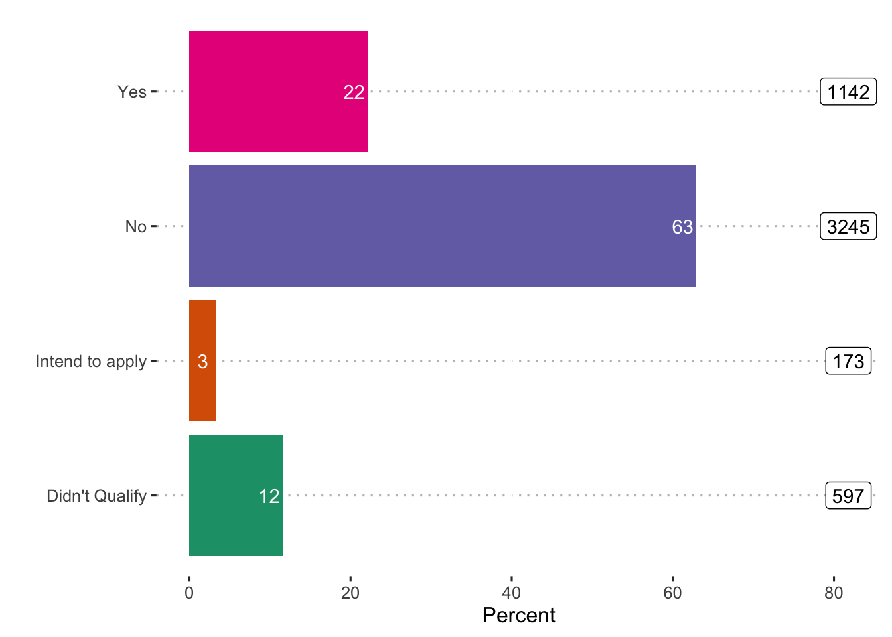

These analyses are based on responses collected from 5173 caregivers between the dates of April 06, 2020 and June 25, 2020. These caregivers represent a range of voices: 12.47% are Black/African American, 18.77% are LatinX, and 12.51% live at or below 1.5 times the federal poverty line. Proportions/percentages are calculated based on the item-level response rates, not out of the total sample size. The data for these analyses are not weighted.
Are you receiving any sort of public or employment benefits? ex. Federal cash assistance programs such as the Temporary Assistance for Needy Families (TANF), Social Security Income (SSI). OR, Federal-in kind benefit programs such as Medicaid, Food Stamps and Housing.
Options:
